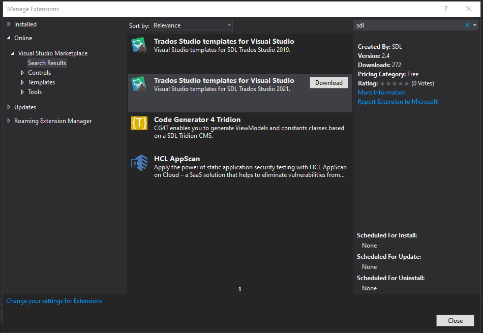

Setting up a Developer Machine
Make sure you have the right prerequisites and meet the system requirements to develop applications that leverage the Trados Studio public APIs.
Prerequisites
For the development environment, we recommend using Microsoft Visual Studio 2022.
If you develop against a version of the API distributed with one of RWS's publicly released applications (i.e. Trados Studio 2026 Release), all required assemblies and files should be available alongside the application. Make sure you have the latest release of Trados Studio installed.
We also recommend installing the Trados Studio SDK on your machine. After installing the Trados Studio SDK, the New Project dialog box in Microsoft Visual Studio 2022 displays additional project templates specific to Trados Studio application development.
- You can get the latest version from the public repository.
- Or you can install directly from Microsoft Visual Studio 2022 -> Tools -> Extensions.

Note
As the build output path for your implementations, choose %AppData%\Trados\Trados Studio\19\Plugins\Packages\.
Also verify that your library references point to the Trados Studio folder, e.g. C:\Program Files\Trados\Trados Studio\Studio19.
For more information on how to build and deploy a Studio plug-in, see Building a plug-in and Plug-in deployment.
Sign and use Strong-Named Assemblies to enable loading of your plug-ins inside Trados Studio. For more information, see How to: Sign an Assembly with a Strong Name. If you don't have a key, you can download the SdlCommunity.snk key from the public repository.
Choosing a different build output path or not signing your assembly prevents Trados Studio from loading your plugin.
Platform support
The Trados Studio API targets 64-bit components.
Set your application's platform target to x64 to ensure compatibility.
If your application also needs to support 32-bit platforms, note that the Trados Studio API does not support running in 32-bit mode.
System requirements for running Trados Studio 2026 Release
- A Microsoft Windows-based PC or an Intel-based Apple Mac computer running Windows as an operating system. Trados Studio 2026 Release runs on the latest build of Windows 11 and the latest updated version of Windows 10.
- Up to 2.5 GB of available disk space to run the Trados Studio 2026 Release installer.
- 2 GB of available disk space to run Trados Studio 2026 Release.
- A recent processor with dual or multi-core technology.
- At least 8 GB RAM.
- Trados Studio 2026 Release requires Microsoft .NET Framework 4.8.
- Additional details can be found in the product release notes.
System requirements for running Trados GroupShare (TM Server, MultiTerm, Project Server)
Supported operating systems:
- Windows Server 2025 with IIS 10 (compatible with Trados GroupShare 2020 SR2 and later)
- Windows Server 2022 with IIS 10 (compatible with Trados GroupShare 2020 SR1 CU6 and later)
- Windows Server 2019 with IIS 10
- Windows Server 2016 with IIS 10
Supported database servers:
- SQL Server 2022
- SQL Server 2019
- SQL Server 2017
Additional details can be found in the product release notes.